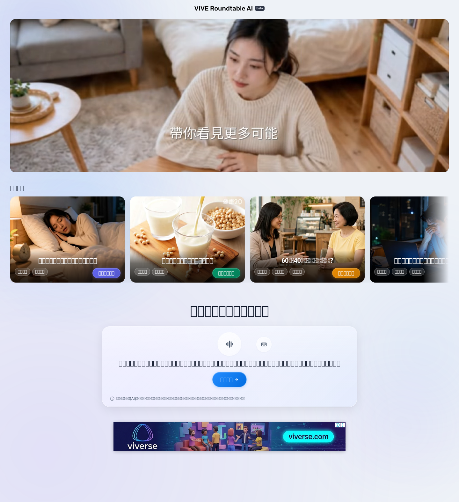
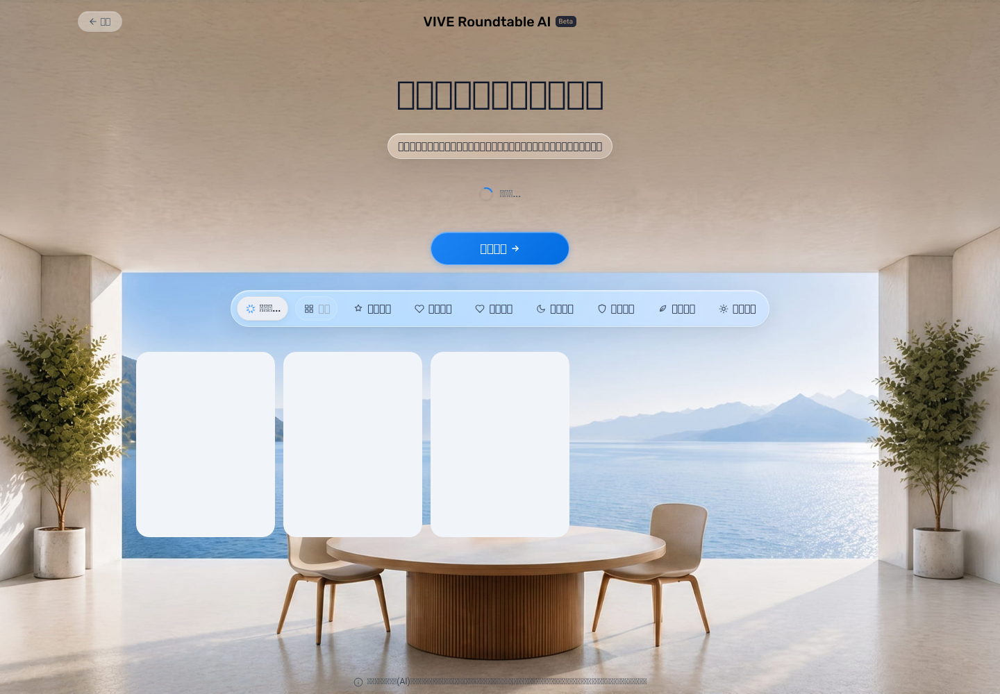

RoundTable Health Rerun
Target: https://doppel-health.zeabur.app/group · Run: 2026-06-09T09:19:35.711Z → 2026-06-09T09:23:01.013Z · Latest-rule review draft, not lockdown.
PASS
Homepage disclaimerPASS
Homepage STT3/3
Start discussion failed3.40s
Median card loadFunctional Matrix
Flow
Page 1PASS
Verified / Passed
Disclaimer visible; consent unlocks homepage; Mandarin fake mic STT produced the sleep-problem transcript and showed the expert-search action.{kind=link}
{kind=link}
Flow
Page 2 expert matchingPASS
Verified / Passed
Custom sleep topic reached expert selection. Recommendation cards loaded in 3.23s, 3.69s, 3.40s.{kind=link}
{kind=link}
{kind=link}
Flow
Page 2 → Page 3FAIL
Missing / Failed
Clicking 開始討論 did not navigate to /group/chat in 3/3 attempts; each attempt timed out after 45s while still on /group/select.Reason / Evidence
Product/user-flow blocker, not a pure HTTP probe issue. No >=400 responses were observed; page remained usable but did not advance. raw JSONFlow
Page 3 chatBLOCKED
Reason
Chat-specific audio, summary, pause/resume, and text interjection checks were not validly executed because the gate into chat failed.Evidence
Blocked by Page 2 → Page 3 failure.Attempt Details
Run
1FAIL
Timing
Cards loaded: 3.23sStart discussion: 45s timeout
State after failure
https://doppel-health.zeabur.app/group/select?topic=%E6%88%91%E6%9C%80%E8%BF%91%E6%99%9A%E4%B8%8A%E7%9D%A1%E4%B8%8D%E5%A5%BD%EF%BC%8C%E5%8D%8A%E5%A4%9C%E5%B8%B8%E5%B8%B8%E9%86%92%E4%BE%86%EF%BC%8C%E6%83%B3%E8%AB%8B%E5%B0%88%E5%AE%B6%E6%8F%90%E4%BE%9B%E6%94%B9%E5%96%84%E7%9D%A1%E7%9C%A0%E7%9A%84%E5%BB%BA%E8%AD%B0%E3%80%82&projectTheme=%E5%81%A5%E5%BA%B7%E9%86%AB%E7%99%82failure screenshot
{kind=link}
Run
2FAIL
Timing
Cards loaded: 3.69sStart discussion: 45s timeout
State after failure
https://doppel-health.zeabur.app/group/select?topic=%E6%88%91%E6%9C%80%E8%BF%91%E6%99%9A%E4%B8%8A%E7%9D%A1%E4%B8%8D%E5%A5%BD%EF%BC%8C%E5%8D%8A%E5%A4%9C%E5%B8%B8%E5%B8%B8%E9%86%92%E4%BE%86%EF%BC%8C%E6%83%B3%E8%AB%8B%E5%B0%88%E5%AE%B6%E6%8F%90%E4%BE%9B%E6%94%B9%E5%96%84%E7%9D%A1%E7%9C%A0%E7%9A%84%E5%BB%BA%E8%AD%B0%E3%80%82&projectTheme=%E5%81%A5%E5%BA%B7%E9%86%AB%E7%99%82failure screenshot
{kind=link}
Run
3FAIL
Timing
Cards loaded: 3.40sStart discussion: 45s timeout
State after failure
https://doppel-health.zeabur.app/group/select?topic=%E6%88%91%E6%9C%80%E8%BF%91%E6%99%9A%E4%B8%8A%E7%9D%A1%E4%B8%8D%E5%A5%BD%EF%BC%8C%E5%8D%8A%E5%A4%9C%E5%B8%B8%E5%B8%B8%E9%86%92%E4%BE%86%EF%BC%8C%E6%83%B3%E8%AB%8B%E5%B0%88%E5%AE%B6%E6%8F%90%E4%BE%9B%E6%94%B9%E5%96%84%E7%9D%A1%E7%9C%A0%E7%9A%84%E5%BB%BA%E8%AD%B0%E3%80%82&projectTheme=%E5%81%A5%E5%BA%B7%E9%86%AB%E7%99%82failure screenshot
{kind=link}
Key Screenshots


Structured evidence: evidence/raw-results.json